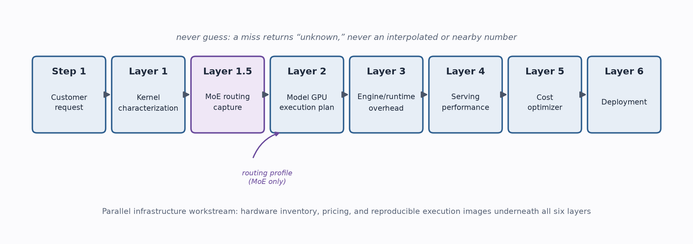
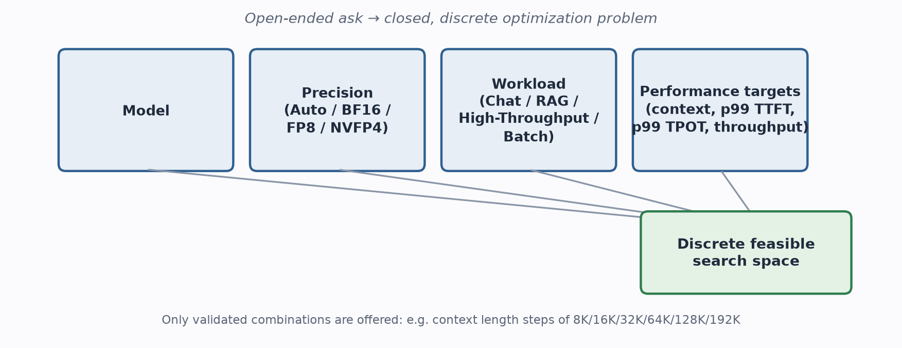
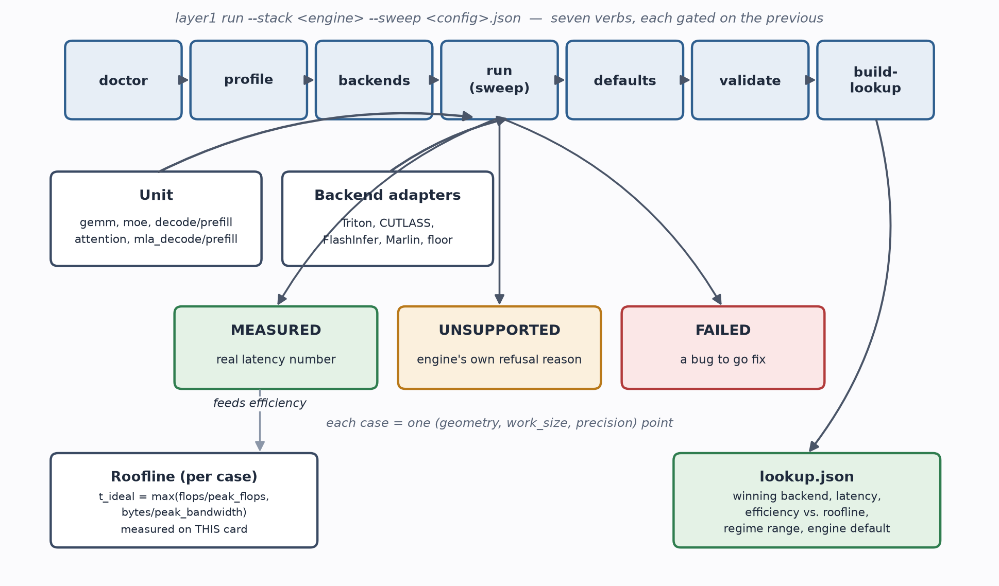
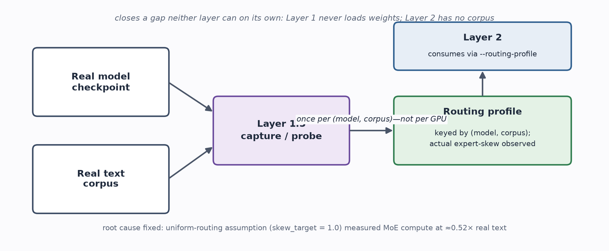
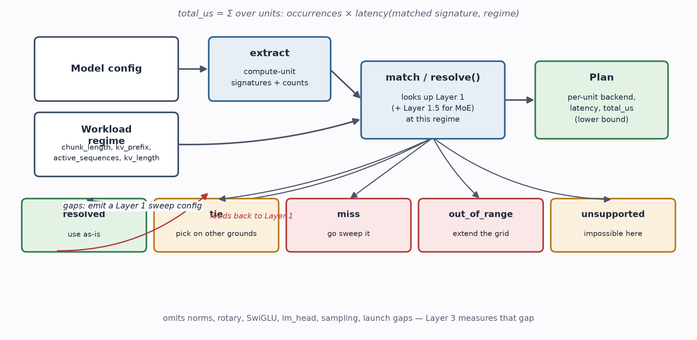
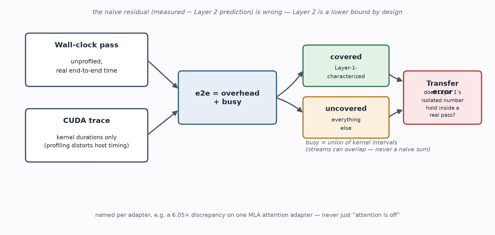
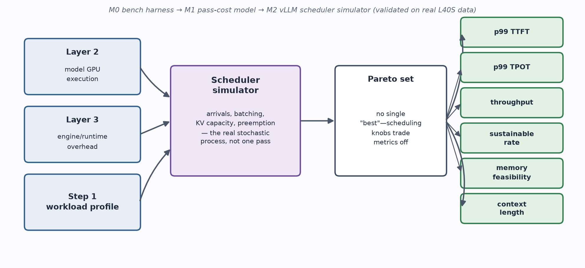
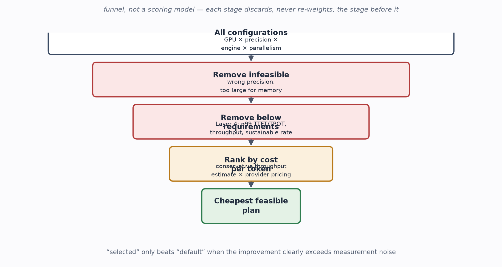
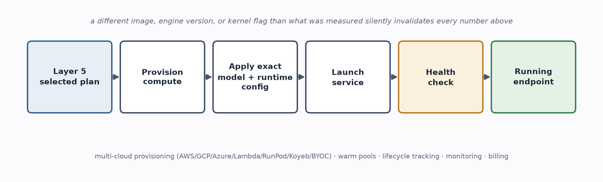

How all the layers fit together
Step 1 captures what the customer actually needs — model, precision preference, workload shape, and required service level — and turns it into a discrete, feasible search space rather than an open-ended one. Layer 1 measures raw GPU kernel performance for isolated compute units across every backend a serving engine could legally run, on one specific card. Layer 1.5 sits between Layer 1 and Layer 2 specifically for Mixture-of-Experts models, capturing how real text actually routes through a model's experts — because Layer 1 must never load model weights, and Layer 2 has no workload/corpus input of its own. Layer 2 decomposes a real model into compute-unit signatures, matches each against Layer 1 (and Layer 1.5, for MoE) at a given workload's regime, and produces a per-model GPU execution plan with a predicted GPU time. Layer 3 measures the additional time a real serving engine's scheduling, batching, CPU-side work, and runtime overhead add on top of that GPU execution plan. Layer 4 integrates Layers 2 and 3 into a prediction of customer-facing metrics — p99 TTFT, p99 TPOT, throughput, sustainable request rate, memory feasibility, supported context length — for a complete configuration under realistic, dynamically-scheduled traffic. Layer 5 searches the whole space of valid configurations, discards anything infeasible or too slow, and picks the lowest cost-per-token option that still satisfies the customer's requirements. Layer 6 takes that chosen configuration and actually provisions, launches, health-checks, and exposes it as a running endpoint — on the exact software stack the prediction was based on. A parallel infrastructure workstream keeps hardware inventory, pricing, and reproducible execution images current underneath all of this.

The principle that recurs at every layer: "never guess"
- A miss is not a zero. An uncharacterized shape returns "unknown," never a number pulled from somewhere nearby.
- No interpolation across geometries or shapes. A missing shape is never priced from a neighboring one — kernel crossovers can move up to 4× between neighbors. Interpolation is allowed only within a regime Layer 1 has explicitly declared safe to interpolate inside.
- Every result carries an honest status, not a collapsed yes/no — Layer 1 uses MEASURED / UNSUPPORTED / FAILED; Layer 2 uses resolved / tie / miss / out_of_range / unsupported. "Didn't fit" is never silently folded into "failed" or "zero."
- Ceilings and profiles are always measured on the real card, never taken from a datasheet. A development/non-production card's numbers are excluded by construction.
- The same discipline carries into Layer 5/6: the optimizer only ever recommends "selected" over "default" execution when the improvement clearly exceeds measurement noise, not whenever it merely looks better; infeasible or unqualified configurations are excluded from ranking rather than silently assumed to work.
Step 1 — Define the Customer Request
What it does: this is the entry point of the whole system, and it exists to turn an open-ended question ("make this fast and cheap") into a closed, discrete optimization problem Runara can actually search.

User inputs
- Model — one of the supported models
- Precision — Auto, BF16, FP8, or NVFP4. "Auto" allows Runara to search every validated precision rather than committing up front.
- Workload — Chat, RAG, High Throughput, or Batch. Each maps to a predefined workload profile (the same shapes Layer 2/3/4 already characterize against).
- Performance requirements — context length, p99 TTFT, p99 TPOT, and required throughput, as applicable to the chosen workload.
Why requirements must be feasible and discrete, not arbitrary
The system deliberately does not accept open-ended performance targets. The available choices are derived from Runara's own empirical measurements and from configurations the platform can actually support — for example, context length is exposed only in validated steps (8K, 16K, 32K, 64K, 128K, 192K), and TTFT/TPOT choices reflect ranges that have actually been shown achievable for that model and workload. This makes the interface conditional: selecting a model, precision, workload, or context length narrows every remaining choice down to only the combinations Runara already knows how to evaluate (and potentially deploy) — so the customer can never ask for something the rest of the pipeline has no way to honestly answer.
Layer 1 — Compute-Unit Characterization
The question it answers, per GPU: for this operator shape and precision, which available kernel implementation is fastest, and how far is that from the analytic best-possible (the "roofline")?

Units and backends
A unit is one operator class:
- gemm — dense projections (e.g. QKV, up/down projections)
- moe — grouped-expert GEMM (mixture-of-experts routing + compute)
- decode_attention / prefill_attention — standard attention, split by phase because they're different operators with different cost shapes
- mla_decode / mla_prefill — DeepSeek-style multi-head latent attention — a genuinely different operator, not a variant of standard attention
- KV-cache / memory operations and multi-GPU communication — additional core units named in the master plan alongside the above
Each unit declares its own signature (the shape parameters that define a case) and a set of backend adapters — one per concrete kernel implementation (e.g. Triton, CUTLASS, FlashInfer, Marlin, or a naive "floor" implementation used purely as a baseline). Units are purely declarative; the actual timing harness is one shared piece of code, specifically so no individual unit can quietly reinvent its own warmup/measurement methodology and drift from everyone else's. For the initial MVP, this layer is scoped to characterization and backend selection, not to developing new kernels of its own.
What a sweep produces
layer1 run --stack <engine> --sweep <config>.json expands
a config into cases — (geometry, work_size, precision) points —
and runs every registered backend against each, recording exactly one of three
outcomes per (case, backend):
Results stream to a partial file, promoted atomically only once the sweep finishes, and merge by (case_key, backend) across runs — so a sweep can be resumed, refined with a boundary-bisection pass, or extended without re-measuring everything that's already known.
The roofline
For every case, an analytic ceiling is computed — t_ideal = max(flops /
peak_flops, bytes / peak_bandwidth) — from this specific card's own
measured peak compute and bandwidth (from layer1 profile),
never a vendor datasheet number. efficiency = t_ideal / t_best is the
real payload of this whole layer: "Triton won" and "Triton won running at 50% of
the machine's actual ceiling" lead to very different conclusions about whether
there's more performance left on the table.
Regimes: axes vs. conditions
A unit's signature has one continuously-varying axis (e.g. kv_length for decode attention — always a single scalar quantity; no unit in this codebase varies two axes simultaneously) and zero or more conditions — values held fixed and matched by exact equality only (e.g. active_sequences, captured_max_seq_len, or MoE's skew_target / active_target).
collapse_regimes walks the sweep's measured points along the axis and
merges adjacent points that share the same winning backend into one
regime, with an explicit bracketed range. A regime is always
derived from the data, never declared in advance, because the boundary
between two kernels winning is specific to each card. A regime guarantees a stable
winning backend across its range — not stable latency (decode attention's
worst in-regime spread measured so far is 335×).
The verbs, in order
doctor— can this box measure at all, and will its numbers be comparable to anyone else's? (checks the installed stack against a pinned reference)profile— measures this card's own bandwidth/compute ceilingsbackends— asks the engine's own legality predicates which backends can even run here, instead of hand-maintaining a dispatch table that goes stalerun— the sweep itselfdefaults— what would the engine have picked on its own? (used to compute "default regret" — the measurable value of doing this characterization at all)validate— gates hard on schema/methodology-drift errors; warns on noise/coverage issuesbuild-lookup— produces the final table
build-lookup and the final artifact
build-lookup turns raw evidence into
results/<hardware_id>/<stack>/lookup.json — one table per
(card, engine) — handling four failure modes a naive "take the minimum" would get
wrong:
- Ties — a winner is only declared if it beats the runner-up by measurement spread plus a 2% margin; otherwise a tie-set is emitted instead of an arbitrary pick.
- Floor kernels winning by survivorship — on cards where real kernels are unavailable, a naive/floor implementation might technically be the only one that ran. Floors are reported purely as a comparison baseline and are never eligible to "win" a cell.
- Regimes are derived, not assumed — see above.
- Development hardware leaking into production numbers — fails closed against a hardware-roles file rather than trusting a flag.
The final lookup.json holds, per (operator signature, regime,
precision): the winning backend, its measured latency, its efficiency vs. the
roofline, the regime's bracketed range, and what the engine's own default would
have picked for comparison.
Output layout
results/<hardware_id>/hardware_profile.json (card-level
ceilings), and
results/<hardware_id>/<stack>/{raw/*.jsonl, defaults/*.json,
lookup.json} per serving engine (vllm / sglang / trtllm) — separated by
engine because the engine itself decides which backend adapters are even eligible
to run, and because the different stacks pin conflicting dependency versions.
Layer 1.5 — MoE Routing-Regime Capture
The question it answers: for a Mixture-of-Experts model, how does real text actually distribute load across experts — and is that distribution uniform enough for Layer 1's own MoE measurements to still apply?

Why this layer had to exist at all
Layer 2 was found to assume skew_target = 1.0 (perfectly uniform
expert routing) when matching a model's MoE operator against Layer 1's lookup
table. Real prose does not route uniformly — tokens cluster toward certain experts
far more than random token IDs do. This was confirmed as the root cause of a real
transfer-error bug: MoE compute measured roughly 0.52× what Layer 1's
uniform-routing assumption predicted, because random-token-id prompts used for
some characterization work under-activate experts compared to real text.
The fix couldn't live in Layer 1 or Layer 2 directly, by design rather than oversight:
- Layer 1 must never load a model's actual checkpoint — it characterizes reusable operator shapes, independent of any specific model's weights, so it has no way to know how a specific model's router actually behaves on real text.
- Layer 2 has no workload/corpus input of its own — it matches shapes against Layer 1's tables, but doesn't run real text through a model to observe routing behavior.
Layer 1.5 sits between the two specifically to close this gap: it loads the real model, runs a real text corpus through it, and captures how routing actually behaves — once per (model, corpus) pair, not per hardware card, since routing behavior depends on the model's weights and the text, not on which GPU runs it.
What it captures and how Layer 2 consumes it
Modules: capture, agree, cli, corpus, probe, profile, stats, plus per-engine hooks
for vLLM, SGLang, and TensorRT-LLM. The output is a routing profile keyed by
(model, corpus), which Layer 2 consumes explicitly via a
--routing-profile input rather than assuming uniformity.
Already-captured profiles exist for OLMoE, DeepSeek-V2-Lite, and Qwen3-30B-A3B, including cross-engine and cross-precision agreement checks (do vLLM and SGLang, or fp8 and bf16, actually observe the same routing behavior for the same model and text?) — stored under a dedicated agreement-profiles directory.
Guarding against silent failure
This layer explicitly guards against several ways a routing capture could look successful while actually measuring the wrong thing: subprocess isolation silently losing the instrumentation hooks partway through a run; warmup passes (which don't reflect steady-state routing) masquerading as real measurements; and a mismatch between the number of tokens requested for a probe and the number actually delivered by the engine, which would otherwise quietly corrupt the captured skew statistics without any visible error.
Layer 2 — Model-Level GPU Execution Plan
The question it answers: which backend should each compute unit use, how long will the forward pass take, and which units dominate it?

Pipeline
- extract — turns a model's config into compute-unit signatures, plus how many times each occurs per forward pass
- match / resolve() — takes those signatures plus a workload (and, for MoE models, Layer 1.5's routing profile) and returns Layer 1's best backend and latency for each, per unit
- gaps — every miss becomes a concrete Layer 1 sweep config that would close it, with the work-size grid read directly back out of lookup.json so the gap-emitter can never drift out of sync with Layer 1's actual grid
Workload
This is the dynamic regime Layer 1's tables are indexed on. For prefill: chunk_length (new tokens), kv_prefix_length (already-cached tokens), prefill_sequences. For decode: active_sequences (concurrent sequences) and kv_length. Plus engine-configuration fields that change what runs rather than traffic itself (max_model_len, cuda_graphs). Prefill and decode are treated as genuinely distinct operators that can even have different winning backends — in principle a deployment could disaggregate them onto different hardware entirely.
resolve()
Walks a model's extracted signatures, looks each up against a Lookup (Layer 1's table, informed by Layer 1.5 for MoE skew) at the workload's regime, and returns a plan: per-unit backend, latency, and a total_us lower bound, computed as:
total_us = SUM over units: occurrences × latency(matched signature, regime)
Getting the per-forward-pass occurrence count wrong (e.g. treating "per layer" as "per model") silently scales the entire prediction by that factor — so extract is careful to always report occurrences per single forward pass.
Five statuses, five different next actions
miss and out_of_range are deliberately kept distinct
because conflating them once caused the gap-emitter to propose re-sweeping
hundreds of cases the card already had fully characterized.
Interpolation rules — the strictest part of the whole system
Never across geometries or shapes — a missing shape is never priced from a measured neighbor, because kernel crossovers can move up to 4× between adjacent shapes. Only within a single regime, and only when Layer 1's own data explicitly marks that regime safe to interpolate inside, using the regime's own measured interior points.
Selectors and exec_config_from_plan
Once resolve() has picked a winning backend per unit, those choices have to
become concrete engine flags. exec_config_from_plan() maps Layer 1's
adapter names onto a serving engine's own closed set of CLI values (e.g.
--linear-backend, --moe-backend,
--attention-backend, --kv-cache-dtype), validated against
that engine's own accepted value sets — turning an abstract plan into a literal,
pasteable server launch command.
One real constraint surfaces here: some flags are global — linear_backend applies to every dense projection in the model at once — so if Layer 1's data shows different winners at different matrix sizes within the same model, a single flag genuinely cannot express both choices simultaneously. This conflict is recorded explicitly (as "unmapped") rather than silently picking one winner and hiding the discrepancy.
What the sum deliberately omits
The per-unit sum is explicitly a lower bound. Norms, rotary embeddings, the SwiGLU dense path, residual adds, the router/gate GEMM, lm_head, sampling, kernel-launch gaps, and layer-boundary cache effects are all named as unmodeled. This gap is exactly what Layer 3's validation step exists to measure — never to tune away or paper over.
Validation
Layer 2 runs the real model in vLLM (or TensorRT-LLM) with the selected config, profiles it, isolates GPU execution time from serving overhead, and compares predicted vs. measured GPU time per unit — across two arms: selected (Layer 1's winning backends forced on) and default (let the engine choose on its own, priced at the engine-default's own measured latency — never at the forced winner's latency, specifically to avoid conflating "the engine picked the wrong kernel" with "the prediction itself is wrong"). This validates whether the reusable, model-agnostic compute-unit characterization correctly transfers to a complete, real model.
What it hands to Layer 3
A plan: per-unit backends, a predicted total GPU time, and the concrete mapped engine flags — ready to be launched as a real server and measured end-to-end. Downstream, this plan is also what Layer 5's optimizer catalog ingests (via a versioned export contract) once it has been validated.
Layer 3 — Serving Engine & Runtime Characterization
The question it answers: given a plan, what additional behavior does the serving engine and runtime itself introduce on top of raw GPU execution — and precisely where does that extra time actually go?

The trap this layer exists to avoid
The naive approach — overhead = measured − Layer 2's prediction — is wrong, because Layer 2's prediction is a lower bound by design (it omits norms, rotary, lm_head, sampling, and more). Taking that naive residual would conflate real, legitimate uncovered GPU work with actual engine overhead, unfairly blaming the engine for arithmetic the model itself requires regardless of engine quality.
The three-term decomposition it uses instead
From two separately measured boundaries — an unprofiled wall-clock pass, and a separate CUDA trace for kernel durations only (profiling itself distorts host-side timing; an 8-step decode window was confirmed to take 6.5 seconds of profiled CPU time against only 93 milliseconds of actual CUDA time) — Layer 3 computes:
e2e = overhead + busy
busy = covered
(Layer-1-characterized kernels) + uncovered (everything else)
busy is the union of kernel time intervals, not a
naive sum — concurrent CUDA streams can overlap, so simply adding up durations
would overstate actual device-busy time. The model, GPU, precision, workload
trace, and execution configuration are all kept exactly as Layer 2 selected them —
this layer only ever adds a characterization of what the engine/runtime
contributes on top, it never redefines the workload itself, so Layer 2 and Layer 3
numbers stay directly comparable.
Transfer error — the central finding this layer produces
Does Layer 1's isolated kernel measurement actually predict that same kernel's cost once it's running inside a real, live forward pass? Confirmed failures have gone both directions:
- A pure measurement bug (167µs claimed vs. 20µs real — caused by timing host-side dispatch instead of the actual device execution)
- A genuine scheme mismatch that isn't a bug at all (36.9µs measured alone vs. roughly 111µs/layer inside a real pass — split-KV-plus-reduction simply doesn't cost the same amount composed into a pipeline as it does standing alone)
- At least one still-open, unresolved gap (a 6.05× discrepancy on one MLA attention adapter)
Every report names the specific adapter responsible, never just the unit — "attention is 3× off" isn't actionable on its own, but naming the exact file is.
Comparing engines fairly
The rule is "compare like with like, or don't compare": an engine whose plan couldn't price every unit that the other engines in the comparison priced is withheld from the ranking entirely, not simply ranked last. Otherwise an engine that happens to be missing coverage for its own largest operator (for example, an engine that never swept MLA at all) would look artificially fastest purely by omission, not by actually being faster.
Shared plumbing: engines/shared.py
Holds the plan-to-engine-flags translation and the profiled-window-shaping logic
exactly once, so each engine's runner (vLLM, SGLang) doesn't reimplement — and
subtly diverge from — the same underlying logic. exec_config_from_plan
here deliberately performs no name or value translation of the
selector the plan carries: "the knob comes from Layer 1, not from a table here."
This is the exact structural gap this effort's own work found and had to patch
locally inside the SGLang runner this session — a vLLM-flavored backend adapter's
uppercase selector value (FLASHINFER) was leaking through unmodified into SGLang's
own CLI builder, which only accepts the lowercase spelling.
phase_window.py's trace-consistency check
A profiled measurement window is only trusted if the actual number of forward passes it contains — counted from a real per-engine marker kernel in the trace — matches what the requested step count predicted. If they disagree, the window is refused outright rather than silently dividing total time by a guessed pass count, because a wrong divisor would be wrong by that exact same ratio in every single downstream number, with nothing left to ever catch it.
backends/*.py adapter files and the engine= field
These correspond one-to-one with Layer 1's backend adapters, each declaring an
engine= field describing which serving engine it targets (or
native / flashinfer for engine-agnostic, kernel-only measurements). The
cross-engine issue surfaced this session: Layer 1's resolve() doesn't filter
candidates by this field when building a stack-specific lookup table, so a
vLLM-flavored adapter can legitimately win a cell inside SGLang's own lookup table
— carrying its incompatible selector spelling along with it unless something
downstream catches it.
Results produced
Per-run decomposition JSON with full provenance (engine version, effective runtime kwargs, checkpoint revision, CUDA graph mode, forward-pass count plus the evidence for it) — feeding a growing catalog of validated runtime configurations, plus cross-engine comparison reports. These same measured phase timings are what Layer 5's optimizer catalog later ingests as its "layer3.catalog" input.
Layer 4 — Serving Performance Model
What this layer adds that Layers 1–3 don't have: real serving is never one fixed batch. Requests arrive at random times; the engine's own scheduler decides what goes into each forward pass; passes mix prefill chunks together with decode steps; the KV cache fills up and requests wait or get preempted. TTFT, ITL, and throughput at a given load are properties of that whole process, not of any single forward pass — so Layer 4 is primarily an integration and prediction layer, combining Layer 2's model GPU execution behavior, Layer 3's serving-engine/runtime behavior, and the canonical workload profile defined back in Step 1, rather than running yet another independent round of benchmarking.

What it predicts
The customer-facing metrics defined back in Step 1: p99 TTFT, p99 TPOT, throughput, sustainable request rate, memory feasibility, and supported context length. These predictions, in turn, are what define which discrete performance requirements Runara is even allowed to expose to the user for a given model and workload — the feasible-choices list in Step 1 is generated from what Layer 4 can actually predict, not the other way around.
Two kinds of configuration, modeled in two different places
- Kernel-shaping knobs (e.g. max_model_len under CUDA graphs, KV page size, attention/MoE backend flags) change what a single pass costs — already fully handled by Layers 1 and 2.
- Scheduling-shaping knobs (max_num_seqs, max_num_batched_tokens, memory fraction / KV capacity, prefix caching, scheduling policy) change which passes run at all — this is Layer 4's job, because these knobs trade metrics against each other with no single universal "best" value (a bigger prefill budget raises throughput and shortens TTFT, but stretches ITL for requests already mid-generation). Layer 4 returns a Pareto set of good configurations, not one single answer.
Milestones
M0 — the bench harness. Starts a real engine server from a pinned configuration (default = the engine's out-of-the-box settings; selected = Layer 2's chosen kernel flags, with context capped to the workload), drives it with a client against a canonical workload at a range of request rates and concurrencies, and persists every single request's full per-token timestamp trace alongside summary percentile metrics.
M1 — pass-cost model, validated against real mixed passes.
cost.py's price_pass() takes one real pass's actual
composition — which decode sequences at which KV lengths, which prefill chunks at
which lengths and cache prefixes — and prices it by resolving each piece against
Layer 2/Layer 1: GEMM and MoE scale with total token count, attention is priced
per-part for its decode and prefill portions separately, and uncovered overhead
comes from Layer 3's own measured per-engine function of token count — never a
flat, made-up constant.
Since nothing upstream ever recorded which real requests shared a forward pass,
passes.py's reconstruct_passes() infers pass boundaries
and composition purely from client-side timestamps: concurrent decode steps land
within about 1e-7 seconds of each other on a real trace, so clustering raw
token-arrival timestamps within a small epsilon (2ms) recovers the engine's actual
iteration boundaries without the engine ever having to expose them directly. It
explicitly cannot see prefill passes hidden behind chunked prefill (only the very
last chunk's completion produces any visible event at all), and it flags any such
inferred chunk length as a lower bound rather than silently guessing the true
split.
M2 — vLLM scheduler simulator, built and validated against real L40S data. A discrete-event simulation of vLLM's own v1 scheduler: every currently-running decode sequence continues unconditionally each pass; prefill chunks fill whatever token budget remains, subject to the concurrency cap and the real KV capacity (parsed directly from the server's own startup log, never guessed); preemption is detected and flagged, not simulated (confirmed zero preemption events occurred across 36 real M0 server logs, so this was a safe simplification). It reuses M1's pass-cost model completely unchanged and produces per-request timelines in exactly the shape the metrics module consumes, so the simulator's output and a real recorded run are compared using identical metric definitions.
M3 — SGLang scheduler simulator, not yet built. Same milestone shape as M2, deliberately kept as a separate effort because SGLang's scheduling model is fundamentally different: separate prefill/decode batches by default, radix-cache reuse, and an overlap scheduler with its own documented timing artifacts.
M4 — configuration search, not yet built in layer4 itself. Originally planned as a grid search over the scheduling knobs inside layer4, evaluated cheaply via the simulator, with only the resulting top-k candidates validated against real runs. In practice, some of this role is already being filled by Layer 5's optimizer catalog (see below) via a different mechanism — a versioned data pipeline rather than a simulator-driven grid search — which is worth treating as a live overlap to resolve rather than two independent efforts.
M5 — wiring results into the app, not yet built in layer4 itself. Same note as M4: the app-runara-ai platform already has a working, shipped mechanism (the optimizer catalog pipeline) for surfacing validated configurations to the product, built independently of this planned layer4 milestone.
Supporting modules
- metrics.py — computes TTFT, TPOT, ITL, and throughput from per-request token timelines using the exact same definitions a real engine benchmark client would, so simulated and real runs are always comparable apples-to-apples.
- validate_m1.py — checks M1's pass-cost predictions against real M0 traces, bucketed into priced vs. unpriced coverage.
- validate_m2.py — checks the whole simulator's aggregate output metrics against a run's own recorded metrics, against explicit numeric validation targets (e.g. p50 TTFT/ITL within ±15%, p99 within ±25%, sustainable throughput within ±15%).
- breakdown.py — a pure reporting tool that decomposes Runara's measured gain over an engine's own defaults into engine / configuration / kernel contributions, built on top of M0's existing data; unrelated to the M1–M3 simulation work itself.
- BACKLOG.md — tracks deliberately deferred items across all four layers (for example: the standard "batch" workload is sized for a 96GB-class card and doesn't fit certain fp8 models on a 48GB card — which is exactly why some serving cells correctly refuse to run rather than silently degrading).
Validation targets
Layer 5 — Cost & Configuration Optimizer
The question it answers: of every configuration the empirical knowledge base supports, which single one is the cheapest per token while still meeting the customer's requirements?

The search, step by step
- Remove incompatible or memory-infeasible combinations first — before even consulting performance predictions, anything that simply can't run (wrong precision for the hardware, model too large for the memory budget) is dropped.
- Remove configurations that can't satisfy the selected performance requirements, using Layer 4's serving-performance predictions (p99 TTFT, p99 TPOT, throughput, sustainable rate) directly.
- Estimate delivered performance and cost per token for the remaining candidates, and select the lowest-cost feasible plan.
Optimizer output: GPU type/count + precision + serving engine + Runara kernels/backends + parallelism + KV strategy + runtime configuration + expected performance/cost.
Where this actually lives today: the optimizer catalog pipeline
This is implemented as a real, versioned catalog pipeline inside the app-runara-ai platform — not a stub. It pulls validated artifacts from every layer below it through explicit, versioned export contracts: Layer 1's kernel lookups, Layer 1.5's routing profiles, Layer 2's plan/memory/coverage export, Layer 3's measured phase-timing catalog, and Layer 4's qualified request-level serving results with their p99 envelopes.
From these, it builds immutable, hashed, checksummed releases (a manifest plus separate configs/plans/measurements/serving data files), which are staged and then atomically activated — so a bad release can be rolled back by simply reactivating the prior one rather than needing a rebuild.
What the ranking logic actually does
- Exact matching, not approximate matching — configurations are matched by exact configuration-hash and execution-identity, never fuzzy-matched.
- "Selected" only wins when it's clearly faster — the "selected" (Runara-optimized) configuration is only reported as better than the engine's "default" configuration when the improvement clearly exceeds measurement noise, not whenever the two merely look different.
- Cost per million tokens is computed from current provider pricing divided by a conservative (not optimistic) throughput estimate.
- Slider-based feasibility search — a customer's TTFT/ITL requirements are treated as a joint constraint, and the search honestly returns "no cheapest candidate" when nothing in the catalog actually satisfies both at once, rather than silently returning the closest miss.
This is a live instance of exactly the filtering logic described above: filter out what's infeasible, filter again by what Layer 4 actually predicts, then pick the cheapest survivor.
Current coverage — real but still narrow
As of the most recent documented release, only a small number of real serving records have full Layer 4 qualification end-to-end (a handful of releases for one model on one high-end card). Most other model/hardware/precision combinations currently fall back to reference Layer 2/3 phase estimates rather than full request-level guarantees. The mechanism is real and already shipped; the breadth of fully-validated coverage behind it is still being built out.
Layer 6 — Deployment System
The question it answers: given the exact configuration Layer 5 selected, how do we actually stand up a running, reachable endpoint that honors every assumption the prediction was built on?

Why this has to be its own layer
The selected plan is only meaningful if it's executed using the same optimized software components the prediction was based on — a different container image, a different engine version, or a different set of kernel flags than what was actually measured would silently invalidate every number Layers 1 through 5 produced. The deployment system exists to turn an abstract optimizer decision into a reproducible, faithful execution environment, not just "any" environment that happens to run the model.
What it does, end to end
Provisions or selects the required compute, applies the selected model and runtime configuration exactly as chosen, launches the service, verifies health, and returns a usable endpoint. For the MVP this is intentionally constrained to a small set of known Runara vLLM/TensorRT-LLM images and supported hardware configurations, rather than trying to support every possible combination from day one.
Where this actually lives today
This is implemented as part of the same production app-runara-ai platform as Layer 5, and it is substantially more built-out than a minimal MVP would require:
- Multi-cloud provisioning — dedicated integrations and launch-configuration tables for AWS EC2, GCP Compute, Azure VMs, Lambda Cloud, RunPod, and Koyeb, plus support for bring-your-own-cloud (BYOC) configurations.
- Warm pools — pre-provisioned instances kept ready so a deployment doesn't have to pay full cold-start provisioning latency every time.
- Lifecycle tracking — dedicated tables for deployments, warm-pool instances, and model/volume snapshots, plus explicit tracking of provisioning stage, progress, and capacity failures (so a failed provisioning attempt on one provider/region is a known, recorded event, not a silent retry loop).
- Health verification — dedicated callback endpoints for instance status and live GPU metrics, so "launched" and "actually healthy and serving" are checked as two separate things.
- Monitoring — a full Prometheus → VictoriaMetrics → Grafana stack scraping every live GPU instance, so deployed endpoints stay observable after launch, not just at the moment they come up.
- Billing — a Stripe-based prepaid wallet system layered directly on top of the deployment lifecycle, tying cost tracking to the same deployment records the provisioning system manages.
This goes beyond the MVP-level description in the master plan (which calls for a narrow, constrained version) — the real system already supports multiple clouds, BYOC, and billing, which is further ahead on this layer than the original MVP scope asked for.
Parallel Infrastructure Workstream
This runs alongside Layers 1 through 5, not after them, because the optimizer and prediction stack cannot become an actual product unless its output can be translated into a real, running deployment. It covers:
- A normalized hardware inventory and pricing representation, kept current across providers.
- The connection between the optimizer's output and actual available compute.
- Reproducible Runara execution images for every supported vLLM/TensorRT-LLM configuration — so the exact software stack a prediction was based on is the exact stack that gets deployed.
- Automation for provisioning, engine startup, health checks, endpoint creation, and teardown.
- A deliberately narrow MVP scope — supporting only the infrastructure paths required for the initial validated configurations, rather than every theoretically possible combination.
How the Layers Connect
| Layer | Question | Output |
|---|---|---|
| Step 1 | What does the customer need? | Model + workload + validated requirements |
| Layer 1 | How do reusable compute units perform on each GPU? | Empirical backend/configuration lookup tables |
| Layer 1.5 | How does real text actually route through this model's experts? | Per-(model, corpus) MoE routing profile |
| Layer 2 | What is the best GPU execution plan for this model and workload? | Per-unit backend plan + predicted/measured model GPU time |
| Layer 3 | What additional behavior does the serving engine/runtime introduce? | Engine/runtime overhead characterization |
| Layer 4 | What customer-facing performance will the complete configuration deliver? | TTFT / TPOT / throughput / capacity / memory predictions |
| Layer 5 | Which feasible plan is cheapest? | Optimized deployment plan |
| Layer 6 | How do we run that exact plan? | Running Runara endpoint |
End-to-End Example
A customer requests: Model A, Precision Auto, Workload RAG, Context 32K, p99 TTFT ≤ 2s, p99 TPOT ≤ 40ms, required throughput 10 req/s. Runara evaluates feasible configurations using Layers 1–4, and finds two that satisfy every requirement:
| Configuration A | Configuration B | |
|---|---|---|
| Hardware | 2× High-End GPU | 4× Lower-Cost GPU |
| Precision | FP8 | FP8 |
| Serving Engine | TRT-LLM | vLLM |
| p99 TTFT | 1.4 s | 1.8 s |
| p99 TPOT | 27 ms | 35 ms |
| Throughput | 14 req/s | 12 req/s |
| Infrastructure Cost | $12/hour | $7/hour |
| Cost / 1M tokens | $0.48 | $0.31 |
| Meets Requirements | Yes | Yes |
Configuration A is faster, but the extra performance isn't required by the customer's workload. Both configurations satisfy the required level of service, so Runara selects Configuration B — the lowest cost per token among the configurations that actually meet every requirement.